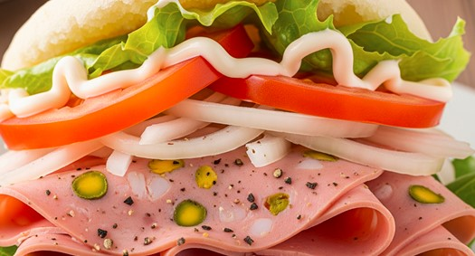

Arepa con Mortadela Arichuna
El desayuno venezolano por excelencia. Rellenas con nuestra Mortadela Arichuna doradita y fresca.
Ver RecetaEl desayuno venezolano por excelencia. Rellenas con nuestra Mortadela Arichuna doradita y fresca.
Ver RecetaSuaves y esponjosos cachitos rellenos de Mortadela Arichuna. Ideales para empezar el día.
Ver RecetaUn revoltillo clásico y nutritivo potenciado con el sabor único de nuestra mortadela tapara.
Ver RecetaNo hace falta que sea diciembre. Disfruta de un rico pan relleno con nuestra Mortadela y tocineta.
Ver RecetaUna opción divertida y deliciosa para el almuerzo. Queso fundido y mortadela crujiente.
Ver RecetaUna cena ligera pero llena de sabor. Capas de sabor con vegetales frescos y Mortadela Arichuna.
Ver RecetaEl pasapalo rey, ahora con un giro especial. Masa crujiente rellena de nuestra fresca mortadela.
Ver Receta